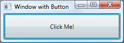

WPF overview


Windows Presentation Foundation (WPF) lets you create desktop client applications for Windows with visually stunning user experiences.
The core of WPF is a resolution-independent and vector-based rendering engine that is built to take advantage of modern graphics hardware. WPF extends the core with a comprehensive set of application-development features that include Extensible Application Markup Language (XAML), controls, data binding, layout, 2D and 3D graphics, animation, styles, templates, documents, media, text, and typography. WPF is included in the .NET Framework, so you can build applications that incorporate other elements of the .NET Framework class library.
This overview is intended for newcomers and covers the key capabilities and concepts of WPF.
Program with WPF
WPF exists as a subset of .NET Framework types that are for the most part located in the System.Windows namespace. If you have previously built applications with .NET Framework using managed technologies like ASP.NET and Windows Forms, the fundamental WPF programming experience should be familiar; you instantiate classes, set properties, call methods, and handle events, all using your favorite .NET programming language, such as C# or Visual Basic.
WPF includes additional programming constructs that enhance properties and events: dependency properties and routed events.
Markup and code-behind
WPF lets you develop an application using both markup and code-behind, an experience with which ASP.NET developers should be familiar. You generally use XAML markup to implement the appearance of an application while using managed programming languages (code-behind) to implement its behavior. This separation of appearance and behavior has the following benefits:
Development and maintenance costs are reduced because appearance-specific markup is not tightly coupled with behavior-specific code.
Development is more efficient because designers can implement an application's appearance simultaneously with developers who are implementing the application's behavior.
Globalization and localization for WPF applications is simplified.
Markup
XAML is an XML-based markup language that implements an application's appearance declaratively. You typically use it to create windows, dialog boxes, pages, and user controls, and to fill them with controls, shapes, and graphics.
The following example uses XAML to implement the appearance of a window that contains a single button.
<Window
xmlns="http://schemas.microsoft.com/winfx/2006/xaml/presentation"
Title="Window with Button"
Width="250" Height="100">
<!-- Add button to window -->
<Button Name="button">Click Me!</Button>
</Window>
Specifically, this XAML defines a window and a button by using the Window and Button elements, respectively. Each element is configured with attributes, such as the Window element's Title
attribute to specify the window's title-bar text. At run time, WPF
converts the elements and attributes that are defined in markup to
instances of WPF classes. For example, the Window element is converted to an instance of the Window class whose Title property is the value of the Title attribute.
The following figure shows the user interface (UI) that is defined by the XAML in the previous example.

Since XAML is XML-based, the UI that you compose with it is assembled in a hierarchy of nested elements known as an element tree. The element tree provides a logical and intuitive way to create and manage UIs.
Code-behind
The main behavior of an application is to implement the functionality that responds to user interactions, including handling events (for example, clicking a menu, tool bar, or button) and calling business logic and data access logic in response. In WPF, this behavior is implemented in code that is associated with markup. This type of code is known as code-behind. The following example shows the updated markup from the previous example and the code-behind.
<Window
xmlns="http://schemas.microsoft.com/winfx/2006/xaml/presentation"
xmlns:x="http://schemas.microsoft.com/winfx/2006/xaml"
x:Class="SDKSample.AWindow"
Title="Window with Button"
Width="250" Height="100">
<!-- Add button to window -->
<Button Name="button" Click="button_Click">Click Me!</Button>
</Window>
using System.Windows; // Window, RoutedEventArgs, MessageBox
namespace SDKSample
{
public partial class AWindow : Window
{
public AWindow()
{
// InitializeComponent call is required to merge the UI
// that is defined in markup with this class, including
// setting properties and registering event handlers
InitializeComponent();
}
void button_Click(object sender, RoutedEventArgs e)
{
// Show message box when button is clicked
MessageBox.Show("Hello, Windows Presentation Foundation!");
}
}
}
Namespace SDKSample
Partial Public Class AWindow
Inherits System.Windows.Window
Public Sub New()
' InitializeComponent call is required to merge the UI
' that is defined in markup with this class, including
' setting properties and registering event handlers
InitializeComponent()
End Sub
Private Sub button_Click(ByVal sender As Object, ByVal e As RoutedEventArgs)
' Show message box when button is clicked
MessageBox.Show("Hello, Windows Presentation Foundation!")
End Sub
End Class
End Namespace
In this example, the code-behind implements a class that derives from the Window class. The x:Class attribute is used to associate the markup with the code-behind class. InitializeComponent is called from the code-behind class's constructor to merge the UI that is defined in markup with the code-behind class. (InitializeComponent is generated for you when your application is built, which is why you don't need to implement it manually.) The combination of x:Class and InitializeComponent
ensure that your implementation is correctly initialized whenever it is
created. The code-behind class also implements an event handler for the
button's Click event. When the button is clicked, the event handler shows a message box by calling the System.Windows.MessageBox.Show method.
The following figure shows the result when the button is clicked.
Controls
The user experiences that are delivered by the application model are constructed controls. In WPF, control is an umbrella term that applies to a category of WPF classes that are hosted in either a window or a page, have a user interface, and implement some behavior.
For more information, see Controls.
WPF controls by function
The built-in WPF controls are listed here.
Buttons: Button and RepeatButton.
Date Display and Selection: Calendar and DatePicker.
Dialog Boxes: OpenFileDialog, PrintDialog, and SaveFileDialog.
Digital Ink: InkCanvas and InkPresenter.
Documents: DocumentViewer, FlowDocumentPageViewer, FlowDocumentReader, FlowDocumentScrollViewer, and StickyNoteControl.
Input: TextBox, RichTextBox, and PasswordBox.
Layout: Border, BulletDecorator, Canvas, DockPanel, Expander, Grid, GridView, GridSplitter, GroupBox, Panel, ResizeGrip, Separator, ScrollBar, ScrollViewer, StackPanel, Thumb, Viewbox, VirtualizingStackPanel, Window, and WrapPanel.
Media: Image, MediaElement, and SoundPlayerAction.
Menus: ContextMenu, Menu, and ToolBar.
Navigation: Frame, Hyperlink, Page, NavigationWindow, and TabControl.
Selection: CheckBox, ComboBox, ListBox, RadioButton, and Slider.
User Information: AccessText, Label, Popup, ProgressBar, StatusBar, TextBlock, and ToolTip.
Input and commands
Controls most often detect and respond to user input. The WPF input system uses both direct and routed events to support text input, focus management, and mouse positioning.
Applications often have complex input requirements. WPF provides a command system that separates user-input actions from the code that responds to those actions.
Layout
When you create a user interface, you arrange your controls by location and size to form a layout. A key requirement of any layout is to adapt to changes in window size and display settings. Rather than forcing you to write the code to adapt a layout in these circumstances, WPF provides a first-class, extensible layout system for you.
The cornerstone of the layout system is relative positioning, which increases the ability to adapt to changing window and display conditions. In addition, the layout system manages the negotiation between controls to determine the layout. The negotiation is a two-step process: first, a control tells its parent what location and size it requires; second, the parent tells the control what space it can have.
The layout system is exposed to child controls through base WPF classes. For common layouts such as grids, stacking, and docking, WPF includes several layout controls:
Canvas: Child controls provide their own layout.
DockPanel: Child controls are aligned to the edges of the panel.
Grid: Child controls are positioned by rows and columns.
StackPanel: Child controls are stacked either vertically or horizontally.
VirtualizingStackPanel: Child controls are virtualized and arranged on a single line that is either horizontally or vertically oriented.
WrapPanel: Child controls are positioned in left-to-right order and wrapped to the next line when there are more controls on the current line than space allows.
The following example uses a DockPanel to lay out several TextBox controls.
<Window
xmlns="http://schemas.microsoft.com/winfx/2006/xaml/presentation"
xmlns:x="http://schemas.microsoft.com/winfx/2006/xaml"
x:Class="SDKSample.LayoutWindow"
Title="Layout with the DockPanel" Height="143" Width="319">
<!--DockPanel to layout four text boxes-->
<DockPanel>
<TextBox DockPanel.Dock="Top">Dock = "Top"</TextBox>
<TextBox DockPanel.Dock="Bottom">Dock = "Bottom"</TextBox>
<TextBox DockPanel.Dock="Left">Dock = "Left"</TextBox>
<TextBox Background="White">This TextBox "fills" the remaining space.</TextBox>
</DockPanel>
</Window>
The DockPanel allows the child TextBox controls to tell it how to arrange them. To do this, the DockPanel implements a Dock attached property that is exposed to the child controls to allow each of them to specify a dock style.
Note
A property that's implemented by a parent control for use by child controls is a WPF construct called an attached property.
The following figure shows the result of the XAML markup in the preceding example.

Data binding
Most applications are created to provide users with the means to view and edit data. For WPF applications, the work of storing and accessing data is already provided for by technologies such as SQL Server and ADO .NET. After the data is accessed and loaded into an application's managed objects, the hard work for WPF applications begins. Essentially, this involves two things:
Copying the data from the managed objects into controls, where the data can be displayed and edited.
Ensuring that changes made to data by using controls are copied back to the managed objects.
To simplify application development, WPF provides a data binding engine to automatically perform these steps. The core unit of the data binding engine is the Binding class, whose job is to bind a control (the binding target) to a data object (the binding source). This relationship is illustrated by the following figure:

The next example demonstrates how to bind a TextBox to an instance of a custom Person object. The Person implementation is shown in the following code:
Namespace SDKSample
Class Person
Private _name As String = "No Name"
Public Property Name() As String
Get
Return _name
End Get
Set(ByVal value As String)
_name = value
End Set
End Property
End Class
End Namespace
namespace SDKSample
{
class Person
{
string name = "No Name";
public string Name
{
get { return name; }
set { name = value; }
}
}
}
The following markup binds the TextBox to an instance of a custom Person object.
<Window
xmlns="http://schemas.microsoft.com/winfx/2006/xaml/presentation"
xmlns:x="http://schemas.microsoft.com/winfx/2006/xaml"
x:Class="SDKSample.DataBindingWindow">
<!-- Bind the TextBox to the data source (TextBox.Text to Person.Name) -->
<TextBox Name="personNameTextBox" Text="{Binding Path=Name}" />
</Window>
Imports System.Windows ' Window
Namespace SDKSample
Partial Public Class DataBindingWindow
Inherits Window
Public Sub New()
InitializeComponent()
' Create Person data source
Dim person As Person = New Person()
' Make data source available for binding
Me.DataContext = person
End Sub
End Class
End Namespace
using System.Windows; // Window
namespace SDKSample
{
public partial class DataBindingWindow : Window
{
public DataBindingWindow()
{
InitializeComponent();
// Create Person data source
Person person = new Person();
// Make data source available for binding
this.DataContext = person;
}
}
}
In this example, the Person class is instantiated in code-behind and is set as the data context for the DataBindingWindow. In markup, the Text property of the TextBox is bound to the Person.Name property (using the "{Binding ... }" XAML syntax). This XAML tells WPF to bind the TextBox control to the Person object that is stored in the DataContext property of the window.
The WPF data binding engine provides additional support that includes validation, sorting, filtering, and grouping. Furthermore, data binding supports the use of data templates to create custom user interface for bound data when the user interface displayed by the standard WPF controls is not appropriate.
For more information, see Data binding overview.
Graphics
WPF introduces an extensive, scalable, and flexible set of graphics features that have the following benefits:
Resolution-independent and device-independent graphics. The basic unit of measurement in the WPF graphics system is the device-independent pixel, which is 1/96th of an inch, regardless of actual screen resolution, and provides the foundation for resolution-independent and device-independent rendering. Each device-independent pixel automatically scales to match the dots-per-inch (dpi) setting of the system it renders on.
Improved precision. The WPF coordinate system is measured with double-precision floating-point numbers rather than single-precision. Transformations and opacity values are also expressed as double-precision. WPF also supports a wide color gamut (scRGB) and provides integrated support for managing inputs from different color spaces.
Advanced graphics and animation support. WPF simplifies graphics programming by managing animation scenes for you; there is no need to worry about scene processing, rendering loops, and bilinear interpolation. Additionally, WPF provides hit-testing support and full alpha-compositing support.
Hardware acceleration. The WPF graphics system takes advantage of graphics hardware to minimize CPU usage.
2D shapes
WPF provides a library of common vector-drawn 2D shapes, such as the rectangles and ellipses that are shown in the following illustration:

An interesting capability of shapes is that they are not just for display; shapes implement many of the features that you expect from controls, including keyboard and mouse input. The following example shows the MouseUp event of an Ellipse being handled.
<Window
xmlns="http://schemas.microsoft.com/winfx/2006/xaml/presentation"
xmlns:x="http://schemas.microsoft.com/winfx/2006/xaml"
x:Class="SDKSample.EllipseEventHandlingWindow"
Title="Click the Ellipse">
<Ellipse Name="clickableEllipse" Fill="Blue" MouseUp="clickableEllipse_MouseUp" />
</Window>
Imports System.Windows ' Window, MessageBox
Imports System.Windows.Input ' MouseButtonEventArgs
Namespace SDKSample
Public Class EllipseEventHandlingWindow
Inherits Window
Public Sub New()
InitializeComponent()
End Sub
Private Sub clickableEllipse_MouseUp(ByVal sender As Object, ByVal e As MouseButtonEventArgs)
MessageBox.Show("You clicked the ellipse!")
End Sub
End Class
End Namespace
using System.Windows; // Window, MessageBox
using System.Windows.Input; // MouseButtonEventHandler
namespace SDKSample
{
public partial class EllipseEventHandlingWindow : Window
{
public EllipseEventHandlingWindow()
{
InitializeComponent();
}
void clickableEllipse_MouseUp(object sender, MouseButtonEventArgs e)
{
// Display a message
MessageBox.Show("You clicked the ellipse!");
}
}
}
The following figure shows what is produced by the preceding code.
For more information, see Shapes and basic drawing in WPF overview.
2D geometries
The 2D shapes provided by WPF cover the standard set of basic shapes. However, you may need to create custom shapes to facilitate the design of a customized user interface. For this purpose, WPF provides geometries. The following figure demonstrates the use of geometries to create a custom shape that can be drawn directly, used as a brush, or used to clip other shapes and controls.
Path objects can be used to draw closed or open shapes, multiple shapes, and even curved shapes.
Geometry objects can be used for clipping, hit-testing, and rendering 2D graphic data.

For more information, see Geometry overview.
2D effects
A subset of WPF 2D capabilities includes visual effects, such as gradients, bitmaps, drawings, painting with videos, rotation, scaling, and skewing. These are all achieved with brushes; the following figure shows some examples.

For more information, see WPF brushes overview.
3D rendering
WPF also includes 3D rendering capabilities that integrate with 2-d graphics to allow the creation of more exciting and interesting user interfaces. For example, the following figure shows 2D images rendered onto 3D shapes.

For more information, see 3D graphics overview.
Animation
WPF animation support lets you make controls grow, shake, spin, and fade, to create interesting page transitions, and more. You can animate most WPF classes, even custom classes. The following figure shows a simple animation in action.

For more information, see Animation overview.
Media
One way to convey rich content is through the use of audiovisual media. WPF provides special support for images, video, and audio.
Images
Images are common to most applications, and WPF provides several ways to use them. The following figure shows a user interface with a list box that contains thumbnail images. When a thumbnail is selected, the image is shown full-size.
For more information, see Imaging overview.
Video and audio
The MediaElement control is capable of playing both video and audio, and it is flexible enough to be the basis for a custom media player. The following XAML markup implements a media player.
<MediaElement
Name="myMediaElement"
Source="media/wpf.wmv"
LoadedBehavior="Manual"
Width="350" Height="250" />
The window in the following figure shows the MediaElement control in action.
For more information, see Graphics and multimedia.
Text and typography
To facilitate high-quality text rendering, WPF offers the following features:
OpenType font support.
ClearType enhancements.
High performance that takes advantage of hardware acceleration.
Integration of text with media, graphics, and animation.
International font support and fallback mechanisms.
As a demonstration of text integration with graphics, the following figure shows the application of text decorations.
For more information, see Typography in Windows Presentation Foundation.
Customize WPF apps
Up to this point, you've seen the core WPF building blocks for developing applications. You use the application model to host and deliver application content, which consists mainly of controls. To simplify the arrangement of controls in a user interface, and to ensure the arrangement is maintained in the face of changes to window size and display settings, you use the WPF layout system. Because most applications let users interact with data, you use data binding to reduce the work of integrating your user interface with data. To enhance the visual appearance of your application, you use the comprehensive range of graphics, animation, and media support provided by WPF.
Often, though, the basics are not enough for creating and managing a truly distinct and visually stunning user experience. The standard WPF controls might not integrate with the desired appearance of your application. Data might not be displayed in the most effective way. Your application's overall user experience may not be suited to the default look and feel of Windows themes. In many ways, a presentation technology needs visual extensibility as much as any other type of extensibility.
For this reason, WPF provides a variety of mechanisms for creating unique user experiences, including a rich content model for controls, triggers, control and data templates, styles, user interface resources, and themes and skins.
Content model
The main purpose of a majority of the WPF controls is to display content. In WPF, the type and number of items that can constitute the content of a control is referred to as the control's content model. Some controls can contain a single item and type of content; for example, the content of a TextBox is a string value that is assigned to the Text property. The following example sets the content of a TextBox.
<Window
xmlns="http://schemas.microsoft.com/winfx/2006/xaml/presentation"
xmlns:x="http://schemas.microsoft.com/winfx/2006/xaml"
x:Class="SDKSample.TextBoxContentWindow"
Title="TextBox Content">
<TextBox Text="This is the content of a TextBox." />
</Window>
The following figure shows the result.
Other controls, however, can contain multiple items of different types of content; the content of a Button, specified by the Content property, can contain a variety of items including layout controls, text, images, and shapes. The following example shows a Button with content that includes a DockPanel, a Label, a Border, and a MediaElement.
<Window
xmlns="http://schemas.microsoft.com/winfx/2006/xaml/presentation"
xmlns:x="http://schemas.microsoft.com/winfx/2006/xaml"
x:Class="SDKSample.ButtonContentWindow"
Title="Button Content">
<Button Margin="20">
<!-- Button Content -->
<DockPanel Width="200" Height="180">
<Label DockPanel.Dock="Top" HorizontalAlignment="Center">Click Me!</Label>
<Border Background="Black" BorderBrush="Yellow" BorderThickness="2"
CornerRadius="2" Margin="5">
<MediaElement Source="media/wpf.wmv" Stretch="Fill" />
</Border>
</DockPanel>
</Button>
</Window>
The following figure shows the content of this button.
For more information on the kinds of content that is supported by various controls, see WPF content model.
Triggers
Although the main purpose of XAML markup is to implement an application's appearance, you can also use XAML to implement some aspects of an application's behavior. One example is the use of triggers to change an application's appearance based on user interactions. For more information, see Styling and templating.
Control templates
The default user interfaces for WPF controls are typically constructed from other controls and shapes. For example, a Button is composed of both ButtonChrome and ContentPresenter controls. The ButtonChrome provides the standard button appearance, while the ContentPresenter displays the button's content, as specified by the Content property.
Sometimes the default appearance of a control may be incongruent with the overall appearance of an application. In this case, you can use a ControlTemplate to change the appearance of the control's user interface without changing its content and behavior.
For example, the following example shows how to change the appearance of a Button by using a ControlTemplate.
<Window
xmlns="http://schemas.microsoft.com/winfx/2006/xaml/presentation"
xmlns:x="http://schemas.microsoft.com/winfx/2006/xaml"
x:Class="SDKSample.ControlTemplateButtonWindow"
Title="Button with Control Template" Height="158" Width="290">
<!-- Button using an ellipse -->
<Button Content="Click Me!" Click="button_Click">
<Button.Template>
<ControlTemplate TargetType="{x:Type Button}">
<Grid Margin="5">
<Ellipse Stroke="DarkBlue" StrokeThickness="2">
<Ellipse.Fill>
<RadialGradientBrush Center="0.3,0.2" RadiusX="0.5" RadiusY="0.5">
<GradientStop Color="Azure" Offset="0.1" />
<GradientStop Color="CornflowerBlue" Offset="1.1" />
</RadialGradientBrush>
</Ellipse.Fill>
</Ellipse>
<ContentPresenter Name="content" HorizontalAlignment="Center"
VerticalAlignment="Center"/>
</Grid>
</ControlTemplate>
</Button.Template>
</Button>
</Window>
using System.Windows; // Window, RoutedEventArgs, MessageBox
namespace SDKSample
{
public partial class ControlTemplateButtonWindow : Window
{
public ControlTemplateButtonWindow()
{
InitializeComponent();
}
void button_Click(object sender, RoutedEventArgs e)
{
// Show message box when button is clicked
MessageBox.Show("Hello, Windows Presentation Foundation!");
}
}
}
Imports System.Windows ' Window, RoutedEventArgs, MessageBox
Namespace SDKSample
Public Class ControlTemplateButtonWindow
Inherits Window
Public Sub New()
InitializeComponent()
End Sub
Private Sub button_Click(ByVal sender As Object, ByVal e As RoutedEventArgs)
MessageBox.Show("Hello, Windows Presentation Foundation!")
End Sub
End Class
End Namespace
In this example, the default button user interface has been replaced with an Ellipse that has a dark blue border and is filled using a RadialGradientBrush. The ContentPresenter control displays the content of the Button, "Click Me!" When the Button is clicked, the Click event is still raised as part of the Button control's default behavior. The result is shown in the following figure:
Data templates
Whereas a control template lets you specify the appearance of a
control, a data template lets you specify the appearance of a control's
content. Data templates are frequently used to enhance how bound data is
displayed. The following figure shows the default appearance for a ListBox that is bound to a collection of Task objects, where each task has a name, description, and priority.
The default appearance is what you would expect from a ListBox. However, the default appearance of each task contains only the task name. To show the task name, description, and priority, the default appearance of the ListBox control's bound list items must be changed by using a DataTemplate. The following XAML defines such a DataTemplate, which is applied to each task by using the ItemTemplate attribute.
<Window
xmlns="http://schemas.microsoft.com/winfx/2006/xaml/presentation"
xmlns:x="http://schemas.microsoft.com/winfx/2006/xaml"
x:Class="SDKSample.DataTemplateWindow"
Title="With a Data Template">
<Window.Resources>
<!-- Data Template (applied to each bound task item in the task collection) -->
<DataTemplate x:Key="myTaskTemplate">
<Border Name="border" BorderBrush="DarkSlateBlue" BorderThickness="2"
CornerRadius="2" Padding="5" Margin="5">
<Grid>
<Grid.RowDefinitions>
<RowDefinition/>
<RowDefinition/>
<RowDefinition/>
</Grid.RowDefinitions>
<Grid.ColumnDefinitions>
<ColumnDefinition Width="Auto" />
<ColumnDefinition />
</Grid.ColumnDefinitions>
<TextBlock Grid.Row="0" Grid.Column="0" Padding="0,0,5,0" Text="Task Name:"/>
<TextBlock Grid.Row="0" Grid.Column="1" Text="{Binding Path=TaskName}"/>
<TextBlock Grid.Row="1" Grid.Column="0" Padding="0,0,5,0" Text="Description:"/>
<TextBlock Grid.Row="1" Grid.Column="1" Text="{Binding Path=Description}"/>
<TextBlock Grid.Row="2" Grid.Column="0" Padding="0,0,5,0" Text="Priority:"/>
<TextBlock Grid.Row="2" Grid.Column="1" Text="{Binding Path=Priority}"/>
</Grid>
</Border>
</DataTemplate>
</Window.Resources>
<!-- UI -->
<DockPanel>
<!-- Title -->
<Label DockPanel.Dock="Top" FontSize="18" Margin="5" Content="My Task List:"/>
<!-- Data template is specified by the ItemTemplate attribute -->
<ListBox
ItemsSource="{Binding}"
ItemTemplate="{StaticResource myTaskTemplate}"
HorizontalContentAlignment="Stretch"
IsSynchronizedWithCurrentItem="True"
Margin="5,0,5,5" />
</DockPanel>
</Window>
The following figure shows the effect of this code.
Note that the ListBox has retained its behavior and overall appearance; only the appearance of the content being displayed by the list box has changed.
For more information, see Data templating overview.
Styles
Styles enable developers and designers to standardize on a particular
appearance for their product. WPF provides a strong style model, the
foundation of which is the Style element. The following example creates a style that sets the background color for every Button on a window to Orange.
<Window
xmlns="http://schemas.microsoft.com/winfx/2006/xaml/presentation"
xmlns:x="http://schemas.microsoft.com/winfx/2006/xaml"
x:Class="SDKSample.StyleWindow"
Title="Styles">
<!-- Style that will be applied to all buttons -->
<Style TargetType="{x:Type Button}">
<Setter Property="Background" Value="Orange" />
<Setter Property="BorderBrush" Value="Crimson" />
<Setter Property="FontSize" Value="20" />
<Setter Property="FontWeight" Value="Bold" />
<Setter Property="Margin" Value="5" />
</Style>
<!-- This button will have the style applied to it -->
<Button>Click Me!</Button>
<!-- This label will not have the style applied to it -->
<Label>Don't Click Me!</Label>
<!-- This button will have the style applied to it -->
<Button>Click Me!</Button>
</Window>
Because this style targets all Button controls, the style is automatically applied to all the buttons in the window, as shown in the following figure:
For more information, see Styling and templating.
Resources
Controls in an application should share the same appearance, which can include anything from fonts and background colors to control templates, data templates, and styles. You can use WPF's support for user interface resources to encapsulate these resources in a single location for reuse.
The following example defines a common background color that is shared by a Button and a Label.
<Window
xmlns="http://schemas.microsoft.com/winfx/2006/xaml/presentation"
xmlns:x="http://schemas.microsoft.com/winfx/2006/xaml"
x:Class="SDKSample.ResourcesWindow"
Title="Resources Window">
<!-- Define window-scoped background color resource -->
<Window.Resources>
<SolidColorBrush x:Key="defaultBackground" Color="Red" />
</Window.Resources>
<!-- Button background is defined by window-scoped resource -->
<Button Background="{StaticResource defaultBackground}">One Button</Button>
<!-- Label background is defined by window-scoped resource -->
<Label Background="{StaticResource defaultBackground}">One Label</Label>
</Window>
This example implements a background color resource by using the Window.Resources property element. This resource is available to all children of the Window. There are a variety of resource scopes, including the following, listed in the order in which they are resolved:
An individual control (using the inherited System.Windows.FrameworkElement.Resources property).
A Window or a Page (also using the inherited System.Windows.FrameworkElement.Resources property).
An Application (using the System.Windows.Application.Resources property).
The variety of scopes gives you flexibility with respect to the way in which you define and share your resources.
As an alternative to directly associating your resources with a particular scope, you can package one or more resources by using a separate ResourceDictionary that can be referenced in other parts of an application. For example, the following example defines a default background color in a resource dictionary.
<ResourceDictionary
xmlns="http://schemas.microsoft.com/winfx/2006/xaml/presentation"
xmlns:x="http://schemas.microsoft.com/winfx/2006/xaml">
<!-- Define background color resource -->
<SolidColorBrush x:Key="defaultBackground" Color="Red" />
<!-- Define other resources -->
</ResourceDictionary>
The following example references the resource dictionary defined in the previous example so that it is shared across an application.
<Application
xmlns="http://schemas.microsoft.com/winfx/2006/xaml/presentation"
xmlns:x="http://schemas.microsoft.com/winfx/2006/xaml"
x:Class="SDKSample.App">
<Application.Resources>
<ResourceDictionary>
<ResourceDictionary.MergedDictionaries>
<ResourceDictionary Source="BackgroundColorResources.xaml"/>
</ResourceDictionary.MergedDictionaries>
</ResourceDictionary>
</Application.Resources>
</Application>
Resources and resource dictionaries are the foundation of WPF support for themes and skins.
For more information, see Resources.
Custom controls
Although WPF provides a host of customization support, you may encounter situations where existing WPF controls do not meet the needs of either your application or its users. This can occur when:
The user interface that you require cannot be created by customizing the look and feel of existing WPF implementations.
The behavior that you require is not supported (or not easily supported) by existing WPF implementations.
At this point, however, you can take advantage of one of three WPF models to create a new control. Each model targets a specific scenario and requires your custom control to derive from a particular WPF base class. The three models are listed here:
User Control Model. A custom control derives from UserControl and is composed of one or more other controls.
Control Model. A custom control derives from Control and is used to build implementations that separate their behavior from their appearance using templates, much like the majority of WPF controls. Deriving from Control allows you more freedom for creating a custom user interface than user controls, but it may require more effort.
Framework Element Model. A custom control derives from FrameworkElement when its appearance is defined by custom rendering logic (not templates).
The following example shows a custom numeric up/down control that derives from UserControl.
<UserControl
xmlns="http://schemas.microsoft.com/winfx/2006/xaml/presentation"
xmlns:x="http://schemas.microsoft.com/winfx/2006/xaml"
x:Class="SDKSample.NumericUpDown">
<Grid>
<Grid.RowDefinitions>
<RowDefinition/>
<RowDefinition/>
</Grid.RowDefinitions>
<Grid.ColumnDefinitions>
<ColumnDefinition/>
<ColumnDefinition/>
</Grid.ColumnDefinitions>
<!-- Value text box -->
<Border BorderThickness="1" BorderBrush="Gray" Margin="2" Grid.RowSpan="2"
VerticalAlignment="Center" HorizontalAlignment="Stretch">
<TextBlock Name="valueText" Width="60" TextAlignment="Right" Padding="5"/>
</Border>
<!-- Up/Down buttons -->
<RepeatButton Name="upButton" Click="upButton_Click" Grid.Column="1"
Grid.Row="0">Up</RepeatButton>
<RepeatButton Name="downButton" Click="downButton_Click" Grid.Column="1"
Grid.Row="1">Down</RepeatButton>
</Grid>
</UserControl>
using System; // EventArgs
using System.Windows; // DependencyObject, DependencyPropertyChangedEventArgs,
// FrameworkPropertyMetadata, PropertyChangedCallback,
// RoutedPropertyChangedEventArgs
using System.Windows.Controls; // UserControl
namespace SDKSample
{
public partial class NumericUpDown : UserControl
{
// NumericUpDown user control implementation
}
}
imports System 'EventArgs
imports System.Windows 'DependencyObject, DependencyPropertyChangedEventArgs,
' FrameworkPropertyMetadata, PropertyChangedCallback,
' RoutedPropertyChangedEventArgs
imports System.Windows.Controls 'UserControl
Namespace SDKSample
' Interaction logic for NumericUpDown.xaml
Partial Public Class NumericUpDown
Inherits System.Windows.Controls.UserControl
'NumericUpDown user control implementation
End Class
End Namespace
The next example illustrates the XAML that is required to incorporate the user control into a Window.
<Window
xmlns="http://schemas.microsoft.com/winfx/2006/xaml/presentation"
xmlns:x="http://schemas.microsoft.com/winfx/2006/xaml"
x:Class="SDKSample.UserControlWindow"
xmlns:local="clr-namespace:SDKSample"
Title="User Control Window">
<!-- Numeric Up/Down user control -->
<local:NumericUpDown />
</Window>
The following figure shows the NumericUpDown control hosted in a Window.
For more information on custom controls, see Control authoring overview.
WPF best practices
As with any development platform, WPF can be used in a variety of ways to achieve the desired result. As a way of ensuring that your WPF applications provide the required user experience and meet the demands of the audience in general, there are recommended best practices for accessibility, globalization and localization, and performance. For more information, see:
Next steps
We've looked at the key features of WPF. Now it's time to build your first WPF app.